GREEN-API Chat — пошаговое руководство
Веб-клиент для переписки в WhatsApp, Telegram и MAX через GREEN-API: несколько инстансов в одном окне, единый список чатов, установка как приложение (PWA). Тестовое задание (frontend) для компании «Грин-Апи».
1101000001 для idInstance и YOUR_API_TOKEN для apiTokenInstance. Скриншоты сняты в демо-режиме, реальных ключей на них нет. Никогда не публикуйте настоящие токены в репозитории, issue или на скриншотах.1Обзор: что умеет приложение
SPA на React + TypeScript (Vite). Список чатов слева, переписка «пузырями» справа. Все запросы идут в HTTP API GREEN-API по схеме {apiUrl}/waInstance{idInstance}/{method}/{apiTokenInstance}.
- Три мессенджера. Для каждого инстанса выбирается WhatsApp, Telegram или MAX. От выбора зависят подсказки, формат chatId, способ авторизации (QR, пароль 2FA, вход по коду в Telegram) и разбор уведомлений.
- Несколько инстансов одновременно. На экране «Инстансы» видны статусы всех инстансов. В режиме «Все чаты» список общий, у каждого чата иконка мессенджера, сверху фильтр по инстансу. Каждый авторизованный инстанс опрашивается в своём цикле.
- Чаты. Новый чат создаётся по номеру или chatId. Текст отправляется через
sendMessage, входящие приходят через очередьreceiveNotification/deleteNotification. Неотправленное сообщение можно повторить. - Управление инстансом. «Выйти из инстанса» вызывает GREEN-API
Logout. «Убрать из приложения» удаляет инстанс только из браузера. Есть режим партнёра (Partner API): список инстансов, создание и удаление. - PWA. Приложение ставится на компьютер, Android и iOS и открывается без сети: оболочка берётся из кеша, запросы к API не кешируются. Когда выходит новая версия, появляется «Обновить».
- Адаптивная вёрстка и демо-режим без инстанса (
?demo=…, см. шаг 9).
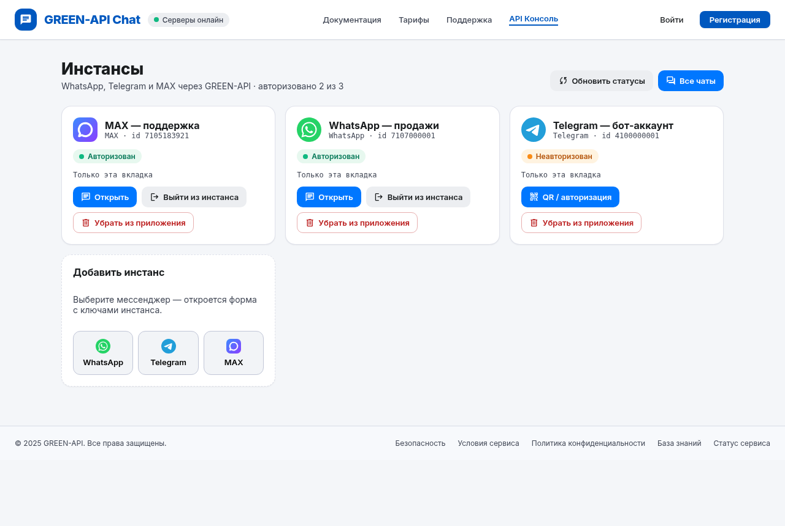
?demo=dashboard).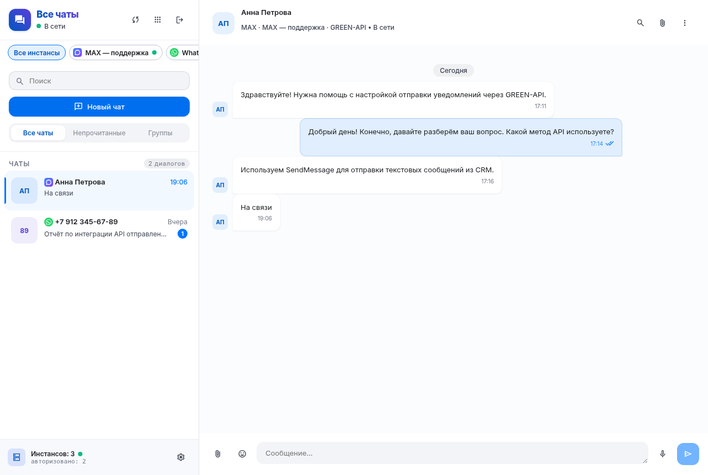
2Получение ключей в консоли GREEN-API
- Зарегистрируйтесь или войдите на console.green-api.com. Публичного API регистрации нет, поэтому экран «Регистрация» в приложении ведёт на сайт.
- Нажмите «Создать инстанс» и выберите мессенджер: WhatsApp, Telegram или MAX. Для проверки хватит бесплатного тарифа Developer, но у него есть лимиты на число запросов и чатов.
- Откройте карточку инстанса и скопируйте три значения:
Поле Пример (заглушка) Куда вводить idInstance1101000001Поле «idInstance» apiTokenInstanceYOUR_API_TOKENПоле «apiTokenInstance» apiUrlhttps://1101.api.green-api.comПоле «API URL» (по умолчанию https://api.green-api.com) - Чтобы получать сообщения, в настройках инстанса очистите webhookUrl (пока задан свой webhook, очередь HTTP API недоступна) и включите уведомления о входящих.
apiTokenInstance попал в git, чат, лог CI или на скриншот, сразу перевыпустите токен в карточке инстанса. Затем обновите его в cypress.env.json и в секретах GitHub.Ключ партнёра (partnerToken вида gac.…) выдаёт support@green-api.com. С ним инстансы можно создавать прямо в приложении (шаг 3, «Режим партнёра»).
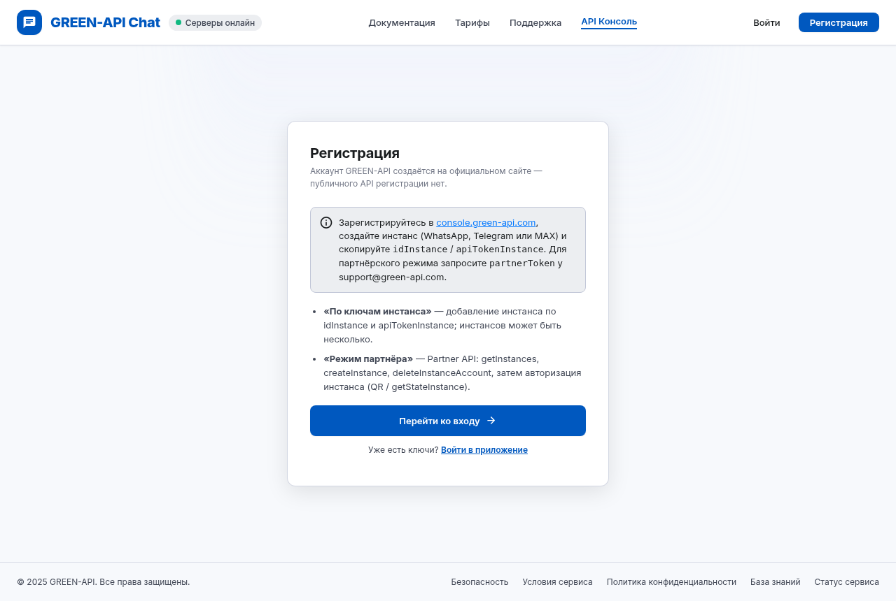
?demo=register).3Добавление инстанса
При первом запуске открывается экран «Вход». Когда инстансы уже есть, такой же экран «Добавить инстанс» открывается с карточки «Добавить инстанс» на экране «Инстансы». Кнопка «← Инстансы» вверху формы возвращает назад без изменений.
- Мессенджер. Выберите одну из трёх карточек: WhatsApp, Telegram или MAX. Выбранная выделена рамкой и галочкой, под карточками одна строка подсказки для этого мессенджера.
- Введите
idInstance(например,1101000001) иapiTokenInstance. Токен можно показать или скрыть кнопкой с глазом. - API URL необязателен, но лучше скопировать
apiUrlиз карточки инстанса. В поле «Название» можно задать подпись на экране «Инстансы», например «Поддержка». - «Запомнить на этом устройстве» сохраняет профиль в
localStorage. Без этой галочки он лежит вsessionStorageдо закрытия вкладки. Работает менеджер паролей браузера. - Нажмите «Войти» (или «Добавить»). Приложение вызывает
getStateInstance. Если ответauthorized, открываются чаты, иначе экран авторизации (шаг 5). Профиль хранится под ключомmessenger:idInstance.
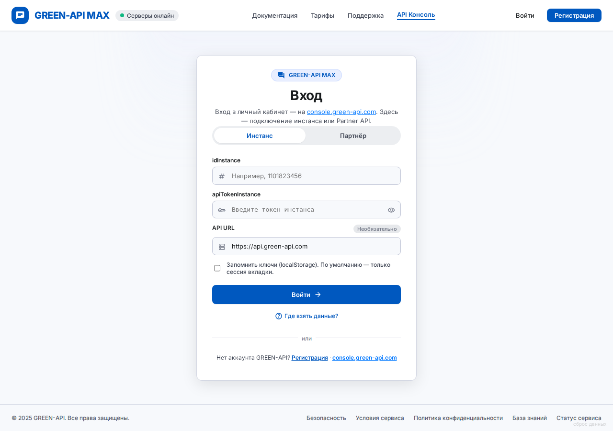
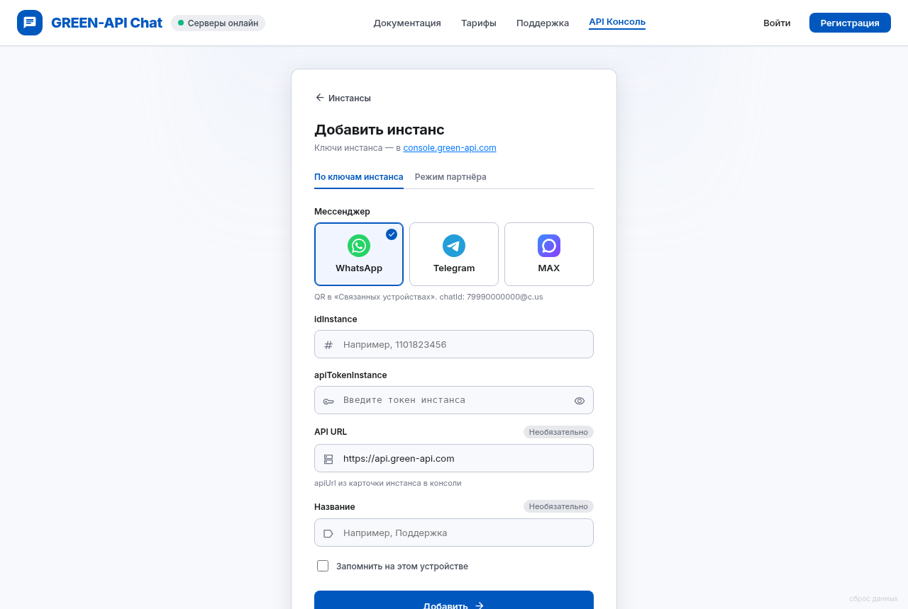
Вкладка «Режим партнёра»
- Откройте вкладку «Режим партнёра», введите
partnerTokenиpartnerApiUrlи нажмите «Продолжить». Будет вызванgetInstances. - В списке «Инстансы партнёра» откройте нужный инстанс. Новый создаётся кнопкой «Создать инстанс» (
createInstance), удаляется кнопкой «Удалить» (deleteInstanceAccount). Мессенджер берётся изtypeInstance. - Выбранный инстанс проходит авторизацию (шаг 5), затем открываются чаты.
partnerToken в браузерном SPA допустимо только для демо и тестов. В продакшене Partner API и секреты должны идти через backend.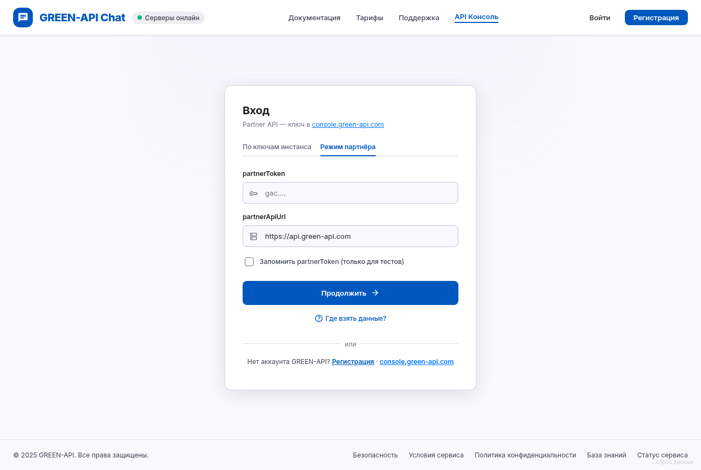
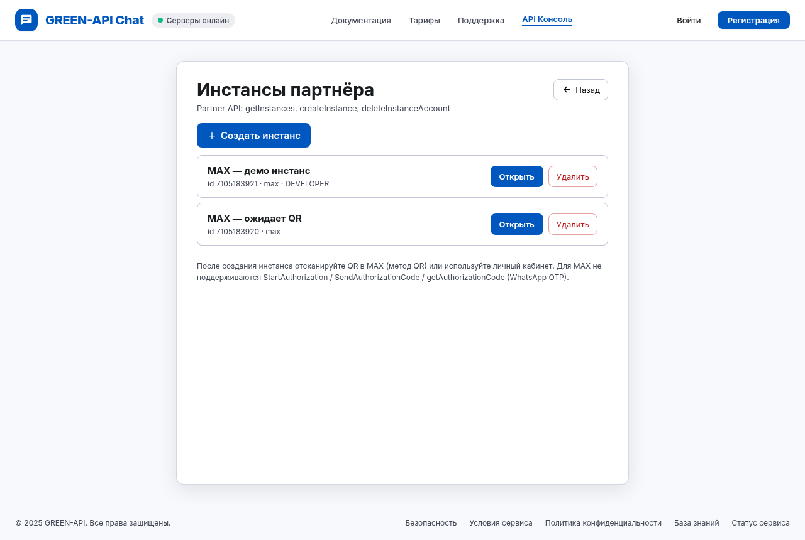
?demo=partner).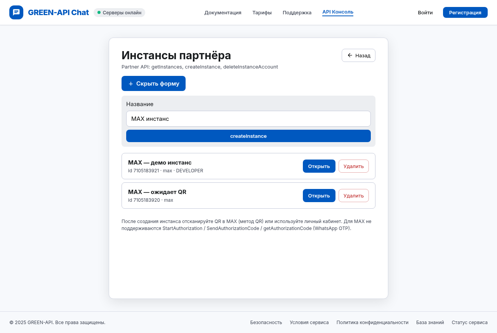
?demo=create-instance).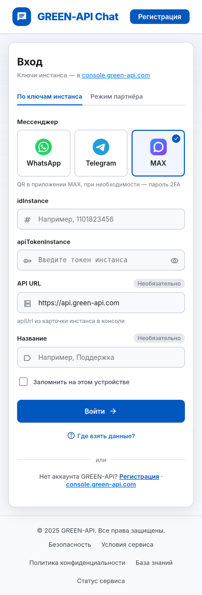
4Экран «Инстансы»
Если подключено больше одного инстанса, приложение открывается на этом экране. Каждому инстансу соответствует карточка: иконка мессенджера, название, idInstance, статус и место хранения («Только эта вкладка» или «Запомнен (localStorage)»).
| Статус | stateInstance | Что делать |
|---|---|---|
| 🟢 Авторизован | authorized | «Открыть» — перейти к чатам инстанса |
| 🟠 Неавторизован | notAuthorized | «QR / авторизация» (шаг 5) |
| 🟠 Ждёт пароль 2FA / Запускается | pendingPassword / starting | Ввести пароль или подождать |
| 🔴 Заблокирован / Приостановлен / Ошибка проверки | blocked / suspended / ошибка запроса | Проверить аккаунт и ключи в консоли |
| ⚪ Проверка… | запрос ещё идёт | — |
- «Обновить статусы» заново вызывает
getStateInstanceдля всех инстансов. В подзаголовке видно, сколько авторизовано, например «авторизовано 2 из 3». - «Все чаты» открывает общий список чатов всех инстансов (шаг 6).
- «Добавить инстанс»: выберите WhatsApp, Telegram или MAX, откроется форма с уже выбранным мессенджером (шаг 3).
- Кнопки «Выйти из инстанса» и «Убрать из приложения» описаны в шаге 7.
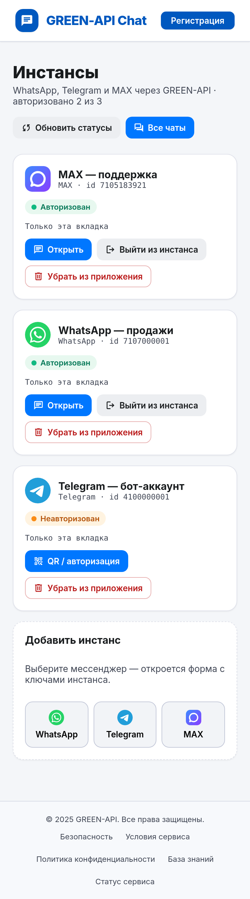
5Авторизация инстанса: QR и код
Новый инстанс находится в состоянии notAuthorized. Экран авторизации показывает QR (метод qr, обновляется каждые ~5 с), опрашивает getStateInstance и, как только придёт authorized, сам переходит к чатам. Ссылка «Открыть qr.green-api.com» открывает тот же QR в отдельной вкладке. QR можно отсканировать и в карточке инстанса в консоли.
| Мессенджер | Где сканировать | Дополнительно |
|---|---|---|
| «Настройки → Связанные устройства → Привязка устройства» | Ошибка «Instance has auth…» — кнопка «Logout инстанса и новый QR». Пароля 2FA нет. | |
| Telegram | «Настройки → Устройства → Подключить устройство» | Облачный пароль (sendAuthorizationPassword). Есть вход по коду. |
| MAX | Сканер QR в мобильном приложении MAX | При pendingPassword — поле «Пароль 2FA» (sendAuthorizationPassword). Вход по коду не поддерживается. |
Telegram: вход по коду
- На экране авторизации нажмите «Войти по коду (startAuthorization)».
- Введите номер телефона (например,
+79990000000) и нажмите «Получить код» (startAuthorization). - Введите код из Telegram и, если он задан, облачный пароль (
sendAuthorizationCode). Telegram ограничивает вход по коду, поэтому надёжнее QR.
blocked отображается как «Аккаунт … заблокирован». Если QR не принимается, перезагрузите инстанс в консоли и попробуйте снова.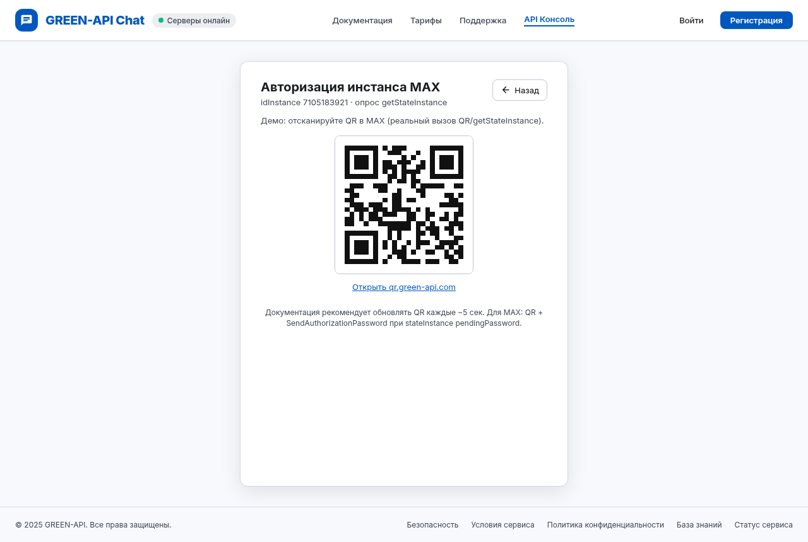
?demo=instance-qr).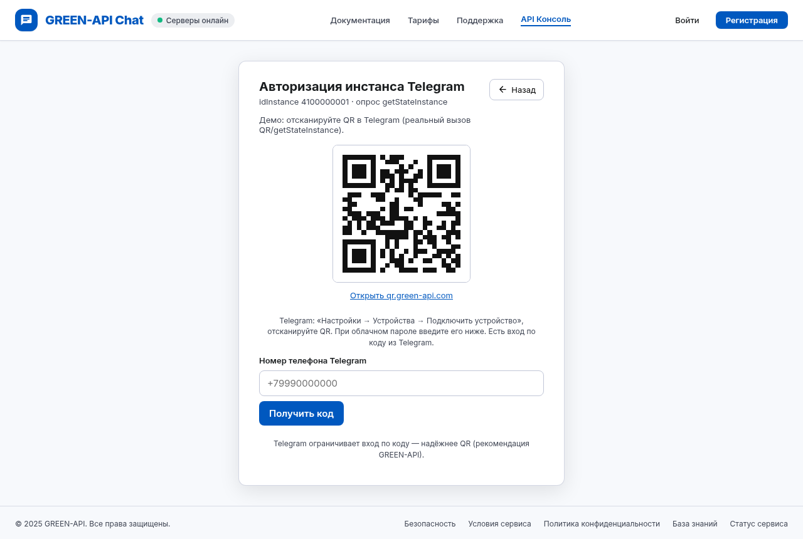
6Чаты: общий список, фильтр, отправка и приём
Общий список и фильтр
- «Все чаты» показывает чаты всех инстансов в одном списке, у каждого чата иконка мессенджера. Ответ уходит через тот инстанс, которому принадлежит чат.
- Над списком переключатель: «Все инстансы» или конкретный инстанс. С ним в списке остаются только чаты этого инстанса, а в шапке появляется его мессенджер (например, «GREEN-API · WhatsApp»). Кнопка «Открыть» на карточке сразу открывает чаты одного инстанса.
- Поиск и вкладки «Все чаты / Непрочитанные / Группы» работают поверх выбранного фильтра.
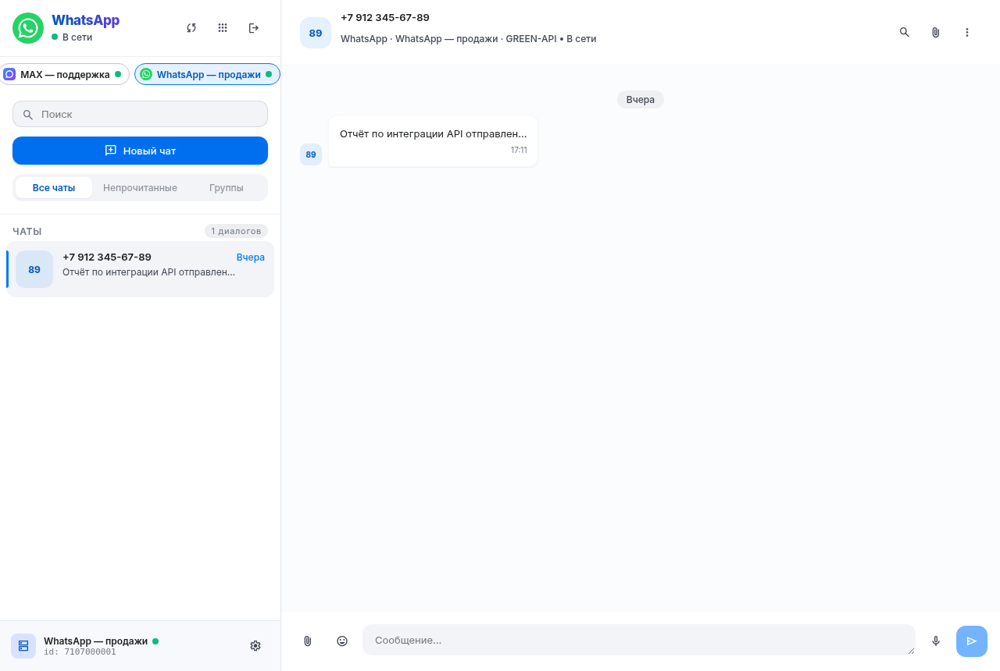
Новый чат
- Нажмите «Новый чат». В режиме «Все инстансы» в модалке есть поле «Инстанс»: через какой инстанс создать чат. Если выбран конкретный инстанс, используется он.
- Введите номер телефона (например,
79990000000) или готовый chatId и нажмите «Создать чат». Формат зависит от мессенджера:- WhatsApp (
src/api/whatsapp.ts): номер превращается в{цифры}@c.us, принимаются также…@c.us,…@g.us(группа) и…@lid. Перед созданием вызываетсяcheckWhatsapp. Если номера нет в WhatsApp, будет ошибка. Если API вернёт lid, он сохранится как алиас, и ответы попадут в тот же диалог. - Telegram (
src/api/telegram.ts): только цифры — ID личного чата (10000000),-100…— группа, номер с+или скобками — чат по номеру. Ответ сопоставляется поsenderPhoneNumber. - MAX (
src/api/chatId.ts): 5–9 цифр — числовой ID чата, 10–15 цифр — номер ({цифры}@c.us), строка с@или начинающаяся с-используется как есть.
- WhatsApp (
Отправка и приём
- Enter отправляет сообщение, Shift+Enter переносит строку. Используется
POST sendMessage. Если отправка не удалась, сообщение помечается «Не отправлено», рядом кнопка «Повторить». - Приём (
src/hooks/useNotificationPolling.ts): для каждого авторизованного инстанса работает свой циклreceiveNotification(long polling 5 с) иdeleteNotification. Текст изtextMessageиextendedTextMessageпопадает в чат с тем же chatId (79990000000@c.usи79990000000считаются одним чатом). - Исходящие с телефона (
outgoingMessageReceived) и через API (outgoingAPIMessageReceived) показываются как исходящие. Дубли поidMessageотбрасываются. Каждое уведомление подтверждается, поэтому очередь не застревает.
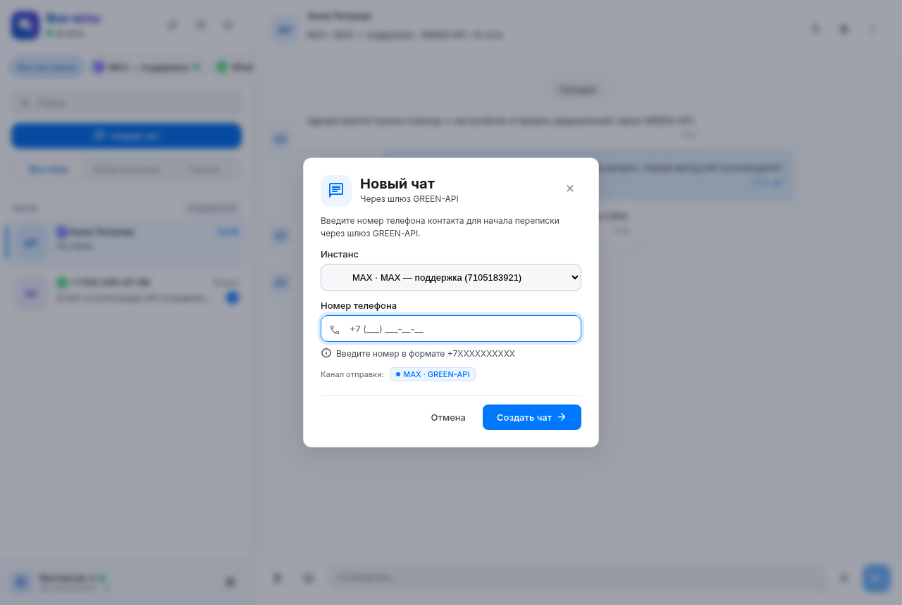
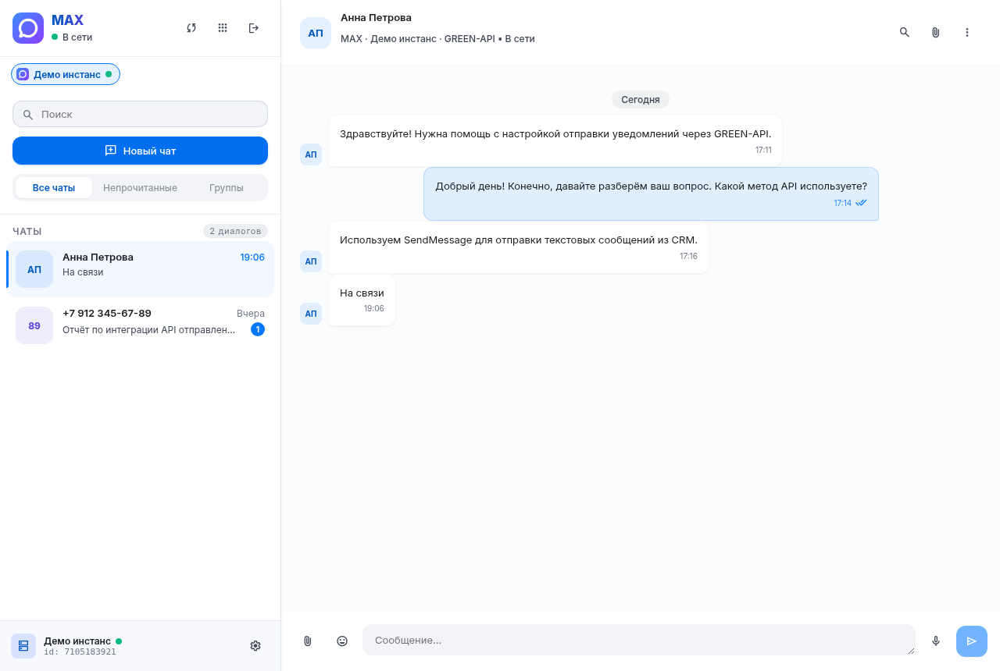
?demo=active).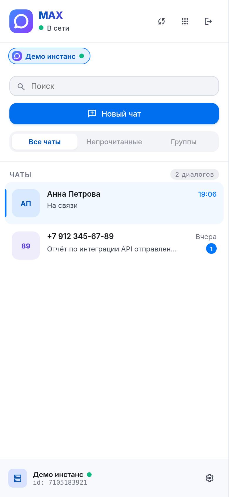
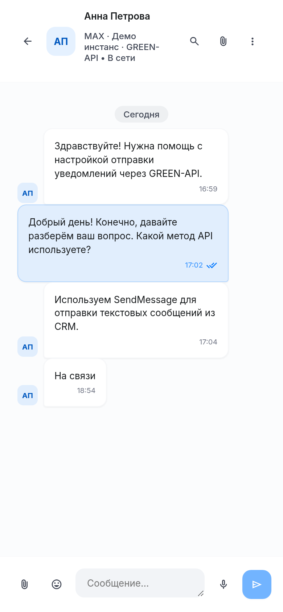
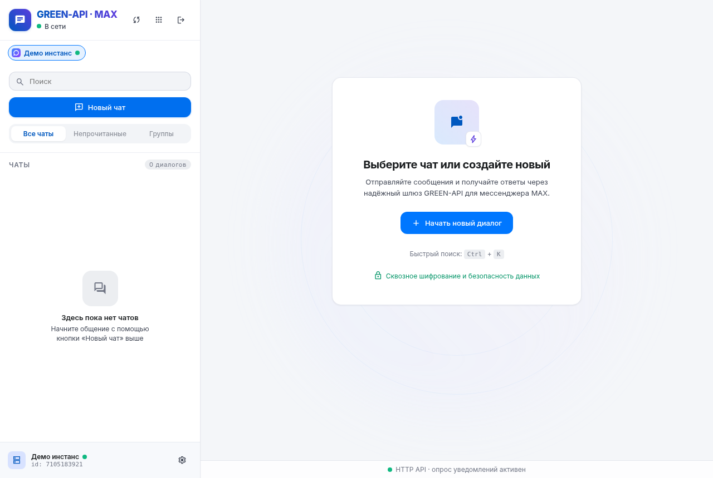
?demo=empty).7«Выйти из инстанса» и «Убрать из приложения»
| Выйти из инстанса | Убрать из приложения | |
|---|---|---|
| Запрос к GREEN-API | Logout | нет |
| Аккаунт в мессенджере | отвязывается, статус notAuthorized | остаётся авторизованным |
| Профиль в приложении | остаётся, предлагается «Авторизовать по QR» | удаляется вместе с локальными чатами и сообщениями |
| Где кнопка | карточка на экране «Инстансы» и иконка выхода в шапке чата (выбран конкретный инстанс) | карточка на экране «Инстансы» |
Оба действия выполняются только после подтверждения в модальном окне. Инстанс в личном кабинете не удаляется ни в одном из случаев. Удалить его можно в консоли или через «Режим партнёра».
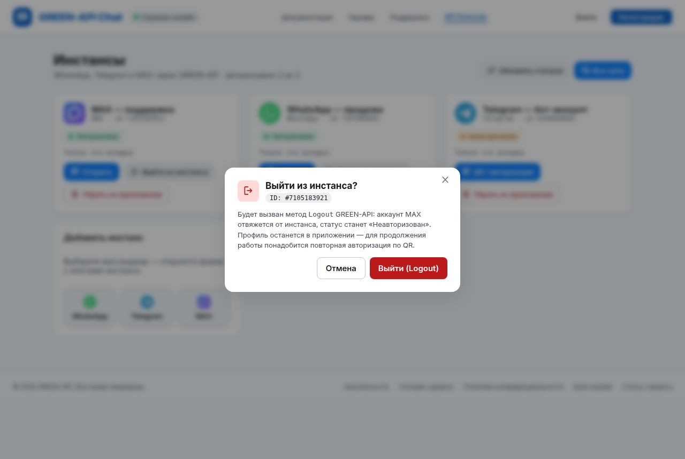
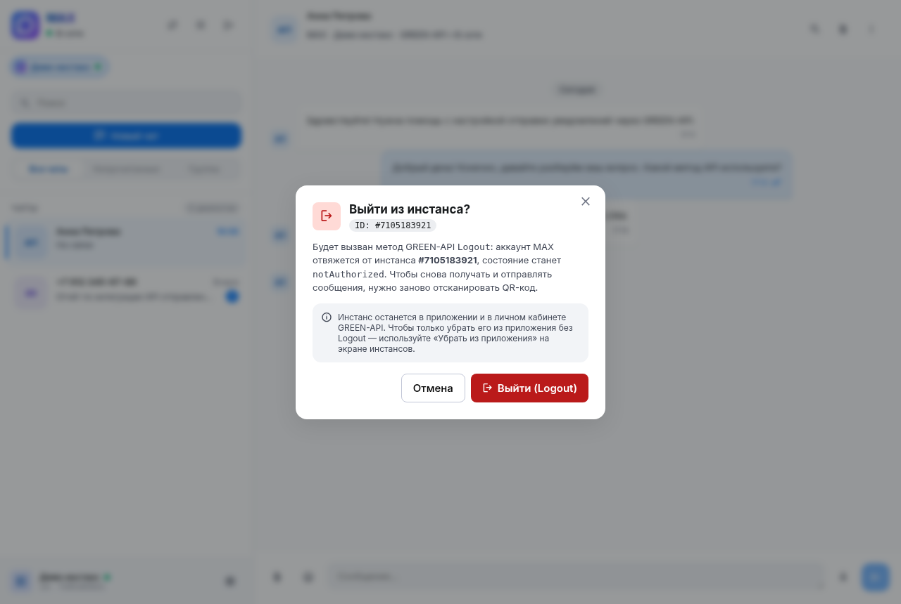
?demo=logout).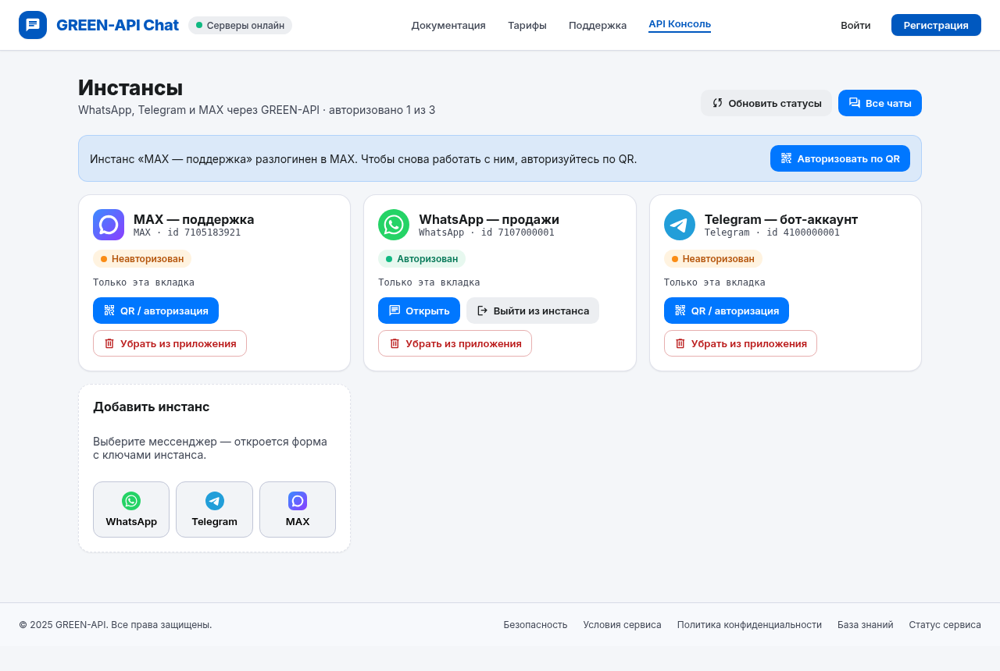
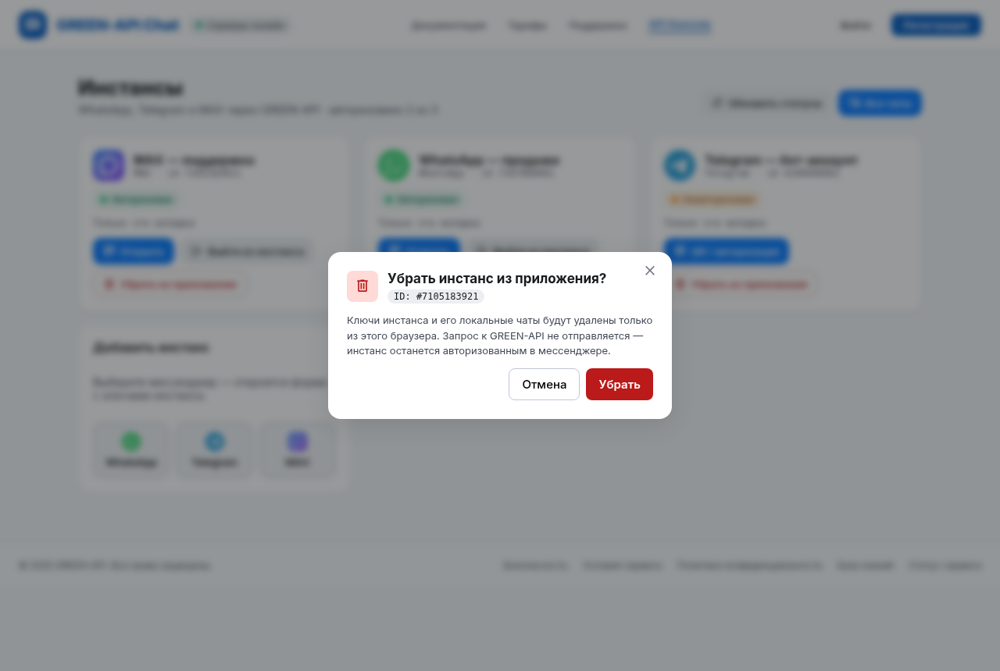
8Установка как приложение (PWA)
GREEN-API Chat ставится как отдельное приложение: своя иконка, своё окно, без адресной строки. Установка работает и с GitHub Pages, и с Docker (нужен HTTPS или localhost).
Компьютер (Chrome, Edge)
- Откройте приложение. Внизу появится «Установить GREEN-API Chat как приложение?». Нажмите «Установить» или значок установки справа в адресной строке.
- Приложение откроется в отдельном окне и появится в «Пуске», Launchpad или списке приложений.
Android (Chrome)
- Нажмите «Установить» во всплывающем окне или выберите в меню ⋮ «Установить приложение» («Добавить на главный экран»).
iPhone и iPad (Safari)
- Нажмите «Поделиться», затем «На экран „Домой“» и «Добавить». Всплывающего предложения на iOS нет, так устроен Safari.
- Запускайте приложение с иконки: оно откроется без панелей браузера.
Офлайн и обновления
- Service Worker кеширует только оболочку (HTML, JS, CSS, иконки, манифест) и шрифты. Запросы к GREEN-API никогда не кешируются, поэтому токены не попадают в кеш браузера.
- Без сети приложение всё равно открывается и показывает сохранённые чаты, сверху плашка «Нет сети». Отправка и приём продолжатся, когда сеть вернётся.
- Когда выходит новая версия, внизу появляется «Доступна новая версия» с кнопкой «Обновить». По кнопке страница один раз перезагрузится с новой версией.
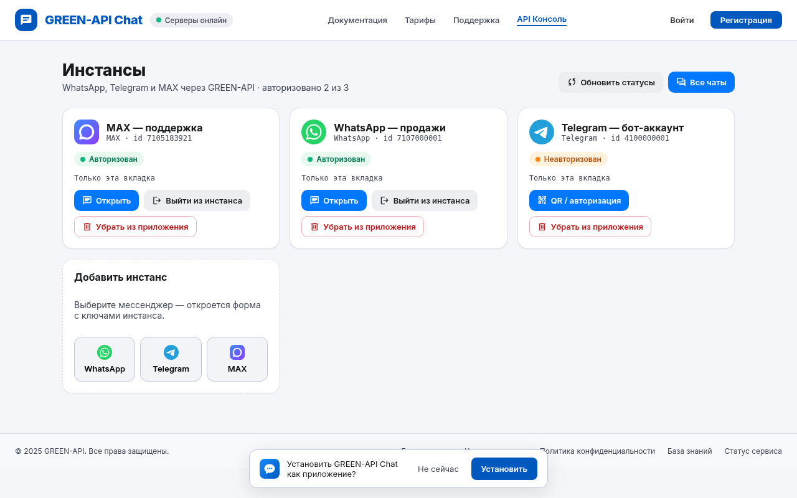
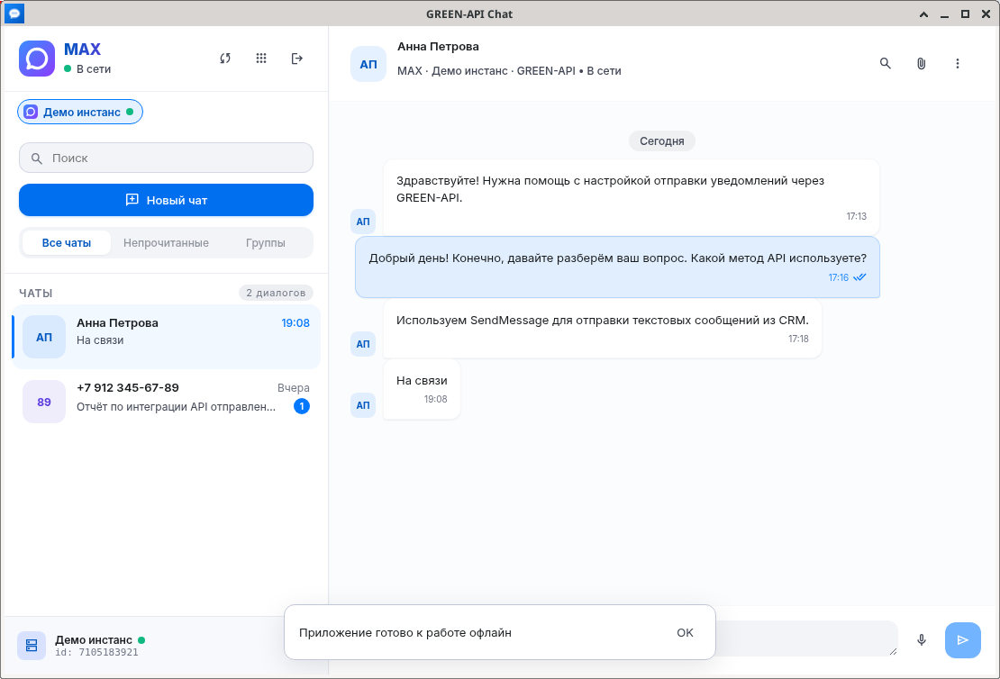
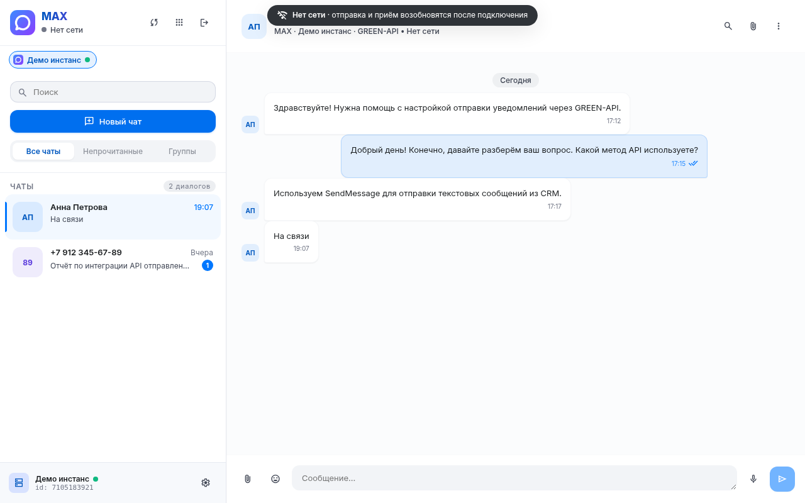
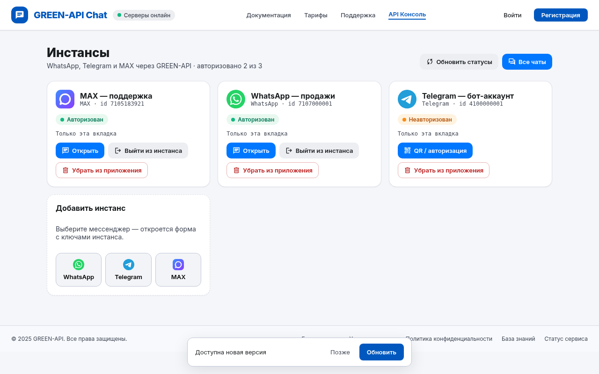
9Запуск локально и в Docker
Требования
- Node.js 22 LTS (минимум 20.19). CI и Dockerfile используют Node 20, Vite 8 требует
^20.19или>=22.12, а Vitest 5 и Cypress 16 заявляют Node 22+. - npm и git. Для Docker нужен Docker с Compose.
Локально
git clone https://github.com/AiStockSearch/green-api-max-chat.git
cd green-api-max-chat
npm ci
npm run dev # http://127.0.0.1:43123В режиме npm run dev запросы идут через same-origin прокси /green-api-proxy/{host}/… (middleware в vite.config.ts). Пропускаются только хосты GREEN-API (*.api.green-api.com, *.api.greenapi.com), остальным отвечает 403 (src/api/devProxy.ts). Так браузер не блокирует запросы по CORS.
Docker
docker compose up --build
# или
docker build -t green-api-max-chat:local .
docker run --rm -p 8080:8080 green-api-max-chat:localПриложение откроется на http://localhost:8080, проверка здоровья: curl http://localhost:8080/health → ok. Образ собирается в несколько этапов: на node:20-alpine собирается dist/ с VITE_GREEN_API_SAME_ORIGIN_PROXY=true, затем nginx:alpine отдаёт статику с SPA fallback и проксирует /green-api-proxy/* только на хосты GREEN-API, чтобы не получился open proxy. Для sw.js, манифеста и index.html nginx отключает кеш (no-cache), для /assets ставит immutable (docker/nginx.conf).
dist/, ключи вводятся в браузере.Демо-режим без инстанса
Добавьте к адресу ?demo=…: интерфейс заполнится демо-данными, запросов к API не будет. Онлайн: ?demo=dashboard, ?demo=active.
?demo= | Что показывает |
|---|---|
dashboard | Экран «Инстансы»: WhatsApp, Telegram и MAX, «Все чаты», Logout и «Убрать» |
active, empty, modal | Активный диалог, пустое состояние, модалка «Новый чат» |
instance-qr | Экран авторизации по QR |
error, unauthorized, network, loading | Неверные ключи, неавторизованный инстанс, ошибка сети/CORS, загрузка |
logout | Подтверждение «Выйти из инстанса» в чате |
register, partner, create-instance | Регистрация, инстансы партнёра, createInstance |
mobile-list, mobile-chat | Мобильная вёрстка (≤768 px) |
10Ошибки и состояния
| Ситуация | Что видно | Что делать |
|---|---|---|
| Неверные ключи (HTTP 401/403) | Баннер «Неверный idInstance или apiTokenInstance…», оба поля подсвечены | Сверить ключи в консоли, при необходимости перевыпустить токен |
| Инстанс не авторизован | Карточка «Инстанс не авторизован в …» с шагами и кнопками «Проверить снова» / «К списку инстансов» | Авторизовать (шаг 5), перезагрузить инстанс в консоли |
Сеть / CORS (Failed to fetch) | Баннер с обратным отсчётом до повтора, у сообщения «Не отправлено — Повторить» | Работать через dev-прокси или Docker, проверить apiUrl |
| Нет сети (офлайн) | Плашка «Нет сети», в шапке статус «Нет сети» | Дождаться подключения (шаг 8) |
| Загрузка | Скелетоны и «Идёт синхронизация сообщений…» | — |
| Неверный partnerToken (401) | Баннер «Неверный partnerToken…» | Запросить ключ у support@green-api.com |
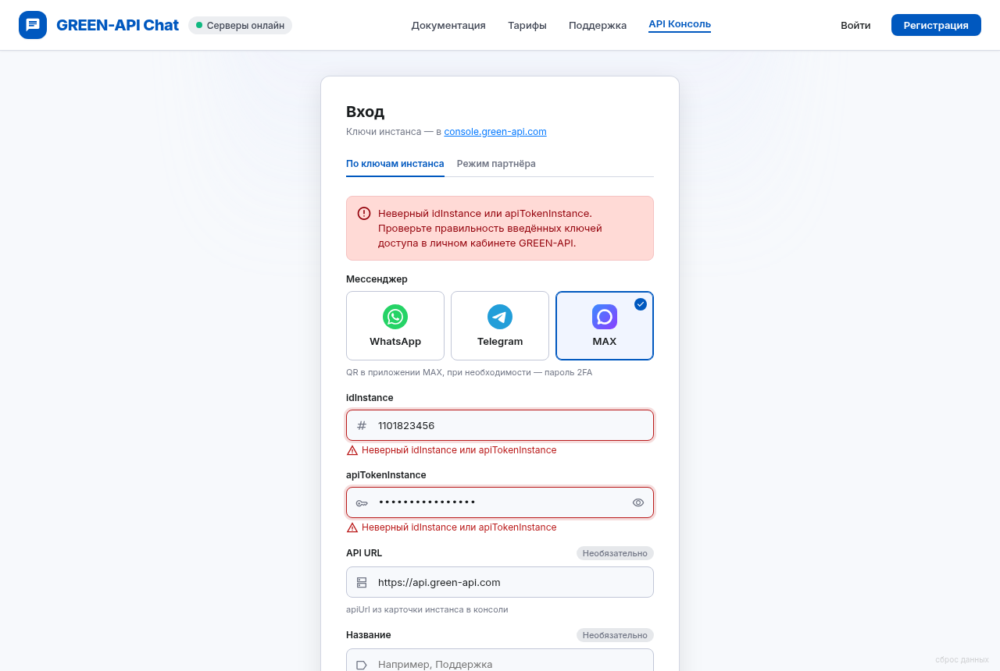
?demo=error).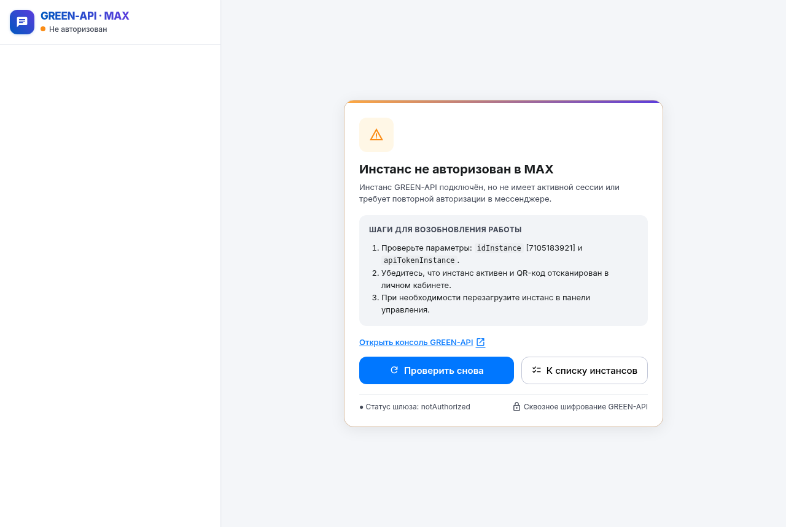
?demo=unauthorized).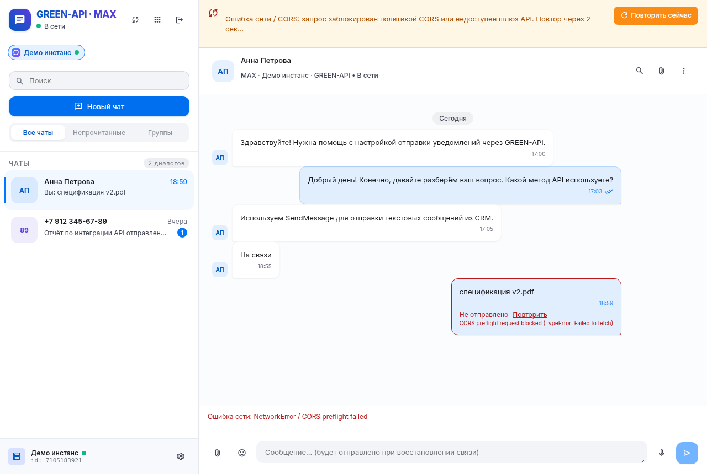
?demo=network).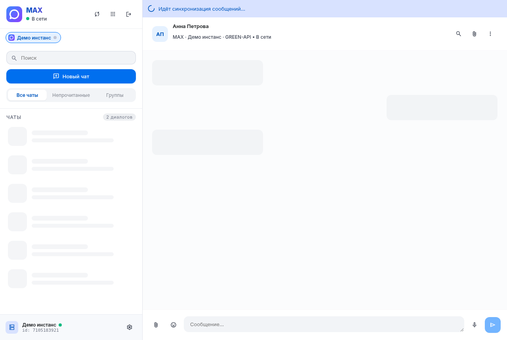
?demo=loading).11Тесты
Unit (Vitest + jsdom)
npm test # vitest run
npm run test:watch
npm run lint # ESLint
npm run build # tsc -b && vite buildПокрыты API и адаптеры мессенджеров (greenApi, notifications, chatId, whatsapp, telegram, adapters, partnerApi, qrAuth, instanceState, errorMapping, devProxy), а также профили и общий список (profilesStore, instances, inbox). Компоненты: экран «Инстансы», MessengerSwitcher, автозаполнение входа. PWA: swPolicy, registerSW, networkStatus, PwaLayer.
E2E (Cypress)
| Spec | Тип | Что проверяет |
|---|---|---|
03-partner-register-demo | демо, без секретов | Демо-маршруты ?demo=register, partner, instance-qr |
01-api-credentials | live | getStateInstance через dev-прокси |
02-instance-login-auth | live | Вход в UI → экран QR или чат |
04-instance-qr-live | live | Получение QR через прокси |
05-live-send-receive | live | sendMessage (API + UI), receive/delete, входящее в UI (по желанию) |
- Скопируйте
cypress.env.example.jsonвcypress.env.json. Этот файл в.gitignoreи не коммитится:{ "messenger": "max", "idInstance": "1101000001", "apiTokenInstance": "YOUR_API_TOKEN", "apiUrl": "https://1101.api.green-api.com", "apiUrlDirect": "https://1101.api.green-api.com", "chatId": "79990000000", "incomingMarker": "", "requireIncoming": false } npm run cy:runзапускает Vite на порту43128и прогоняет все specs. Интерактивный режим:npm run cy:open. Мессенджер для live-specs задаётся полемmessenger(max|whatsapp) или переменнойGREEN_API_MESSENGER.- Spec
05требуетchatIdи авторизованный инстанс. Чтобы проверить входящее, во время прогона отправьте на инстанс текстe2e-in-…из лога или задайтеincomingMarkerиrequireIncoming: true.
PWA-проверка
node scripts/verify-pwa.mjs <url> в headless Chrome проверяет installability (CDP), регистрацию SW, содержимое кешей (GREEN-API и токенов там быть не должно) и запуск без сети.
12CI/CD и GitHub Pages
.github/workflows/ci.yml — push и PR в main
- quality:
npm ci→ lint → unit-тесты → build →docker build→ Docker smoke. Smoke-шаг проверяет заголовки nginx и запускаетverify-pwa.mjsпротив контейнера. - cypress-demo: spec
03на демо-маршрутах, секреты не нужны. - cypress-live: работает, только если заданы секреты
GREEN_API_ID_INSTANCE,GREEN_API_TOKEN,GREEN_API_URL(по желаниюGREEN_API_CHAT_ID,GREEN_API_MESSENGER). Без них шаг пропускается, и сообщения не отправляются.
.github/workflows/deploy.yml — Docker-образ в GHCR
Срабатывает на push в main, на теги v*.*.* и вручную. Собирает образ и публикует его как ghcr.io/aistocksearch/green-api-max-chat с тегами ветки, semver и sha: docker pull ghcr.io/aistocksearch/green-api-max-chat:main.
.github/workflows/deploy-pages.yml — GitHub Pages
- build:
GITHUB_PAGES=true npm run build(base/green-api-max-chat/). В артефакт добавляютсяguide.html,screenshots/*.pngи404.html(SPA fallback). - deploy: публикует демо-приложение и это руководство. Прокси на Pages нет, поэтому сайт предназначен для демо, документации и установки PWA.
13FAQ
«Неверный idInstance или apiTokenInstance», хотя ключи верные
Проверьте, нет ли лишних пробелов и совпадает ли API URL с карточкой инстанса (например, https://1101.api.green-api.com). Если токен перевыпускали, нужен новый.
«Ошибка сети / CORS: … Failed to fetch»
Запускайте через npm run dev или Docker: там есть прокси. Хостинг без прокси упирается в CORS. Хост apiUrl должен входить в allowlist (*.api.green-api.com, *.api.greenapi.com).
Сообщения уходят, а ответы не приходят
Очистите webhookUrl и включите уведомления о входящих в настройках инстанса. Закройте другие вкладки с тем же инстансом: опросы одной очереди конфликтуют. Отображается только текст.
Ответ пришёл в другой или новый чат
Входящее попадает в чат с тем же chatId. В MAX собеседник может прийти с числовым ID, в WhatsApp с …@lid. Приложение связывает lid с номером через checkWhatsapp при создании чата. Если чат создан раньше, создайте его заново по номеру.
Чем «Выйти из инстанса» отличается от «Убрать из приложения»?
«Выйти» вызывает Logout: аккаунт отвязывается, профиль остаётся. «Убрать» удаляет профиль только из браузера, к API не обращается. Подробнее в шаге 7.
Экран QR не исчезает
Сканируйте актуальный код (он обновляется каждые ~5 с) в мобильном приложении нужного мессенджера. Если просят пароль 2FA, введите его. Для Telegram можно войти по коду. При blocked проверьте аккаунт и перезагрузите инстанс в консоли.
Кнопки «Установить» нет
Chrome и Edge показывают её только по HTTPS или на localhost, если приложение ещё не установлено. В Safari на iOS установка идёт через «Поделиться → На экран „Домой“». Если приложение уже установлено, откройте его из списка приложений.
После деплоя видна старая версия
Дождитесь плашки «Доступна новая версия» и нажмите «Обновить» или просто перезапустите приложение. sw.js отдаётся без кеша, поэтому обновление находится при следующем открытии.
Live Cypress пропущен в CI
Не заданы секреты GREEN_API_ID_INSTANCE, GREEN_API_TOKEN, GREEN_API_URL. Это нормально: демо-spec и остальные проверки всё равно выполняются.
npm ci ругается на engines или не стартует Cypress
Обновите Node до 22 LTS.
Порт 43123 / 43128 / 8080 занят
Dev: npm run dev -- --port 5173. Docker: поменяйте маппинг, например -p 8081:8080.
Как переснять скриншоты?
npm run screenshots собирает проект и снимает кадры 01–26 (scripts/capture-screenshots.mjs) и PWA-кадры 27, 29, 30 (scripts/capture-pwa-screenshots.mjs) в headless Chrome на демо-данных. Кадр 28 — окно chrome --app=…/?demo=active.